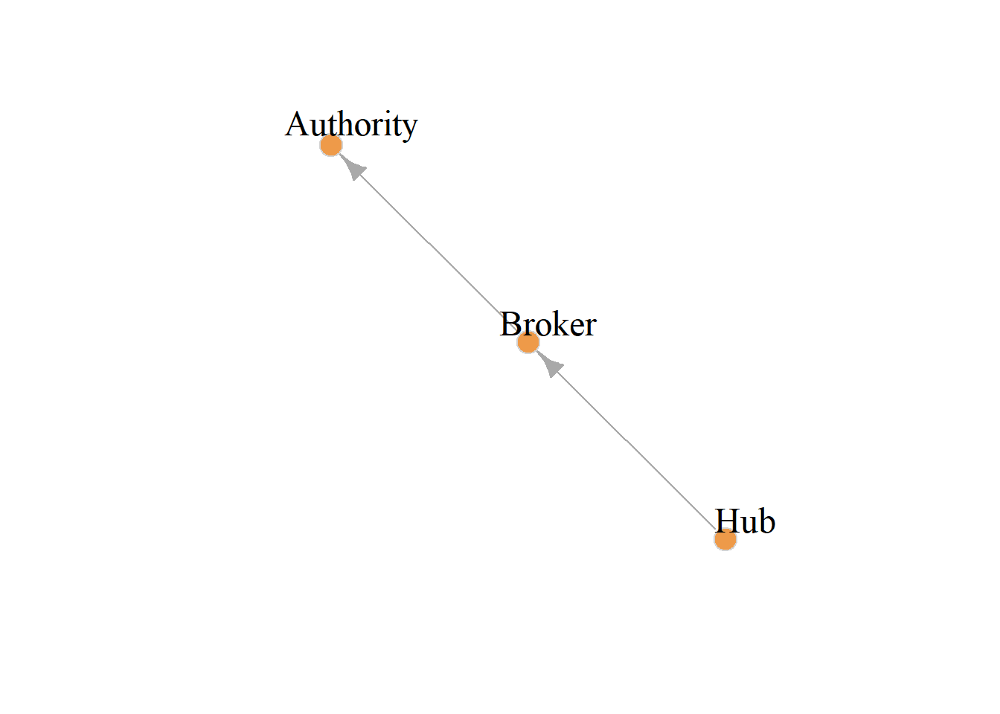

blondel.sim <- function(A, B) {
K <- matrix(1, nrow(B), nrow(A))
if (is.null(rownames(A)) == TRUE) {
rownames(A) <- 1:nrow(A)
colnames(A) <- 1:nrow(A)
}
if (is.null(rownames(B)) == TRUE) {
rownames(B) <- 1:nrow(B)
colnames(B) <- 1:nrow(B)
}
k <- 1
diff <- 1
old.diff <- 2
while (diff != old.diff | k %% 2 == 0) {
old.diff <- diff
K.old <- K
K <- (B %*% K.old %*% t(A)) + (t(B) %*% K.old %*% A)
K <- K/norm(K, type = "F")
diff <- abs(sum(abs(K)) - sum(abs(K.old)))
k <- k + 1
}
for (j in 1:ncol(K)) {
K[, j] <- K[, j]/max(K[, j])
}
rownames(K) <- rownames(B)
colnames(K) <- rownames(A)
return(list(K = K, k = k, diff = diff))
}Role Similarity Across Graphs
Sometimes we may want to figure out how similar a given node’s position in one social network is to that of another node in a different network. This calls for a method that could allow us to compare how similar a node in one graph is to other nodes in another graph.
A particularly interesting version of this problem arises when we have information on the same set of nodes across different set of relations. In that case, we may be interested in answering the question as to whether nodes occupy similar or dissimilar positions across the networks defined by the different relations.
Blondel et al. (2004) describe an approach that can help us make headway on this problem. They use a similar iterative procedure that we saw can be used to compute status scores from directed graphs (like PageRank and HITS) but this time to compute similarity scores between pairs of nodes across graphs.
The idea, just like with the status scores, is that the two set of nodes in each graph start with the same set of similarity scores, and then we update them as we traverse the connectivity structure of the two graphs.
So let’s say the adjacency matrix of the first graph is \(\mathbf{A}\) and that of the second graph is \(\mathbf{B}\). The first graph has \(n_A\) number of nodes and the corresponding quantity in the second graph is \(n_B\) our target similarity matrix \(\mathbf{Z}\), comparing the node sets in the two graphs, will therefore be of dimensions \(n_A \times n_B\).
We initialize \(z_{ij}(0) = 1\) for all \(i\) and \(j\); that is, \(\mathbf{Z}(0)\) is a matrix full of ones. At each time step subsequent to that, we fill up the \(\mathbf{Z}\) matrix with new values according to:
\[ \mathbf{Z}(t + 1) = \mathbf{B}\mathbf{Z(t)}\mathbf{A}^T + \mathbf{B}^T\mathbf{Z(t)}\mathbf{A} \]
To ensure convergence, we then normalize the \(\mathbf{Z}\) matrix after every update using our trusty Euclidean norm:
\[ \mathbf{Z}(t > 0) = \frac{\mathbf{Z}}{||\mathbf{Z}||_2} \]
Computing Node Similarities Across Different Graphs
Let us see how this would work with real data. We will compare two subgraphs of the larger law_advice network (Lazega 2001) from the networkdata package. This is a directed advice-seeking network so a node goes from advisee to adviser.
We create two subgraphs. One composed of older male partners (aged fifty or older) and the other composed of the women in the firm (both parterns and associates). They look lik this:


A function to compute the Blondel similarity as described earlier can be written as:
Which is modeled after our status game function but instead of computing a vector of scores we are populating a whole matrix!
The basic task is to figure out which nodes from the first matrix are most similar to which nodes from the second. That is, given these two networks can be identify actors who play similar roles in each?
And here are the results presented in tabular form:
library(kableExtra)
A <- as.matrix(as_adjacency_matrix(g1))
B <- as.matrix(as_adjacency_matrix(g2))
K <- round(blondel.sim(A, B)[[1]], 2)
kbl(K, align = "c", format = "html", row.names = TRUE) %>%
column_spec(1, bold = TRUE) %>%
kable_styling(full_width = TRUE,
bootstrap_options = c("hover", "condensed", "responsive"))| 1 | 2 | 3 | 4 | 5 | 6 | 7 | 8 | 9 | 10 | 11 | 12 | 13 | |
|---|---|---|---|---|---|---|---|---|---|---|---|---|---|
| 1 | 0.25 | 0.22 | 0.41 | 0.48 | 0.45 | 0.11 | 0.47 | 0.24 | 0.20 | 0.30 | 0.47 | 0.25 | 0.36 |
| 2 | 0.39 | 0.38 | 0.38 | 0.27 | 0.16 | 0.37 | 0.15 | 0.38 | 0.34 | 0.38 | 0.36 | 0.34 | 0.34 |
| 3 | 0.64 | 0.63 | 0.54 | 0.33 | 0.09 | 0.67 | 0.10 | 0.63 | 0.56 | 0.58 | 0.51 | 0.55 | 0.51 |
| 4 | 0.65 | 0.66 | 0.52 | 0.26 | 0.00 | 0.71 | 0.00 | 0.63 | 0.60 | 0.59 | 0.46 | 0.58 | 0.50 |
| 5 | 1.00 | 1.00 | 0.99 | 0.73 | 0.28 | 1.00 | 0.34 | 1.00 | 1.00 | 1.00 | 1.00 | 1.00 | 1.00 |
| 6 | 0.66 | 0.67 | 0.56 | 0.33 | 0.04 | 0.71 | 0.06 | 0.65 | 0.64 | 0.62 | 0.53 | 0.62 | 0.57 |
| 7 | 0.05 | 0.04 | 0.12 | 0.14 | 0.16 | 0.00 | 0.15 | 0.04 | 0.04 | 0.08 | 0.12 | 0.05 | 0.09 |
| 8 | 0.32 | 0.31 | 0.37 | 0.32 | 0.24 | 0.26 | 0.24 | 0.30 | 0.29 | 0.34 | 0.37 | 0.31 | 0.34 |
| 9 | 0.49 | 0.44 | 0.88 | 1.00 | 1.00 | 0.20 | 1.00 | 0.47 | 0.40 | 0.63 | 0.96 | 0.50 | 0.71 |
| 10 | 0.31 | 0.28 | 0.73 | 0.89 | 0.89 | 0.04 | 0.91 | 0.29 | 0.30 | 0.47 | 0.82 | 0.39 | 0.60 |
| 11 | 0.86 | 0.86 | 1.00 | 0.82 | 0.58 | 0.76 | 0.57 | 0.86 | 0.79 | 0.92 | 0.97 | 0.82 | 0.86 |
| 12 | 0.15 | 0.15 | 0.18 | 0.16 | 0.04 | 0.15 | 0.08 | 0.15 | 0.20 | 0.17 | 0.21 | 0.20 | 0.23 |
| 13 | 0.34 | 0.34 | 0.42 | 0.37 | 0.26 | 0.29 | 0.28 | 0.33 | 0.34 | 0.38 | 0.43 | 0.36 | 0.40 |
| 14 | 0.18 | 0.17 | 0.32 | 0.35 | 0.33 | 0.09 | 0.34 | 0.17 | 0.16 | 0.23 | 0.35 | 0.19 | 0.27 |
| 15 | 0.40 | 0.41 | 0.41 | 0.28 | 0.16 | 0.39 | 0.15 | 0.40 | 0.38 | 0.41 | 0.37 | 0.38 | 0.36 |
| 16 | 0.53 | 0.51 | 0.92 | 0.99 | 0.87 | 0.29 | 0.91 | 0.52 | 0.54 | 0.69 | 1.00 | 0.61 | 0.80 |
| 17 | 0.46 | 0.44 | 0.70 | 0.74 | 0.49 | 0.33 | 0.58 | 0.46 | 0.53 | 0.55 | 0.81 | 0.57 | 0.71 |
| 18 | 0.34 | 0.31 | 0.67 | 0.81 | 0.63 | 0.15 | 0.72 | 0.34 | 0.41 | 0.46 | 0.82 | 0.47 | 0.67 |
In the table each column is normalized by its maximum, so a 1.0 in that column tells us that that node (from the first network) is maximally similar to the corresponding row node (from the second network).
For instance, node 5 in the women’s lawyers graph (a highly central node in terms of being an adviser) is most similar to node 1 in the older men partner’s graph (also a highly central node in terms of being an adviser).
Node 9 in the women lawyer’s graph, who’s mostly an advise-seeker, is most similar to node 5 in the older men partner graph who’s also an advise-seeker. So it looks like it works!
Equivalence to HITS
One neat thing that Blondel et al. (2004) show is that we can also take a network and compare it to ideal-typical small graphs and get scores for how much that node resembles each of the nodes in the ideal-typical structure.
More specifically, they show that if we can run their algorithm to compare any network to the following two-node graph:
g <- make_empty_graph(2)
g <- add_edges(g, c(1,2))
V(g)$name <- c("Hub", "Authority")
plot(g,
edge.arrow.size=1,
vertex.color="tan2",
vertex.size=12, vertex.frame.color="lightgray",
vertex.label.color="black", vertex.label.cex=1.5,
vertex.label.dist=-3)In which case, the result “similarity” scores, will be equivalent to the Hub and Authority scores!
We can check that this is the case for the women’s lawyers advice graph:
A <- as.matrix(as_adjacency_matrix(g))
B <- as.matrix(as_adjacency_matrix(g2))
K <- round(blondel.sim(A, B)[[1]], 4)
tab <- cbind(K, Hub.Score = round(hits_scores(g2)$hub, 4),
Auth.Score = round(hits_scores(g2)$authority, 4))
kbl(tab, align = "c", format = "html", row.names = TRUE) %>%
column_spec(1, bold = TRUE) %>%
kable_styling(full_width = TRUE,
bootstrap_options = c("hover", "condensed", "responsive"))| Hub | Authority | Hub.Score | Auth.Score | |
|---|---|---|---|---|
| 1 | 0.3810 | 0.0000 | 0.3810 | 0.0000 |
| 2 | 0.1434 | 0.3415 | 0.1434 | 0.3415 |
| 3 | 0.0813 | 0.6021 | 0.0813 | 0.6021 |
| 4 | 0.0000 | 0.7826 | 0.0000 | 0.7826 |
| 5 | 0.1654 | 1.0000 | 0.1654 | 1.0000 |
| 6 | 0.0000 | 0.7826 | 0.0000 | 0.7826 |
| 7 | 0.1434 | 0.0000 | 0.1434 | 0.0000 |
| 8 | 0.2235 | 0.2858 | 0.2235 | 0.2858 |
| 9 | 1.0000 | 0.0386 | 1.0000 | 0.0386 |
| 10 | 0.8973 | 0.0000 | 0.8973 | 0.0000 |
| 11 | 0.6110 | 0.6559 | 0.6110 | 0.6559 |
| 12 | 0.0000 | 0.2095 | 0.0000 | 0.2095 |
| 13 | 0.2239 | 0.3364 | 0.2239 | 0.3364 |
| 14 | 0.3197 | 0.0523 | 0.3197 | 0.0523 |
| 15 | 0.1434 | 0.4036 | 0.1434 | 0.4036 |
| 16 | 0.8432 | 0.2174 | 0.8432 | 0.2174 |
| 17 | 0.4089 | 0.3188 | 0.4089 | 0.3188 |
| 18 | 0.5222 | 0.0955 | 0.5222 | 0.0955 |
The first two columns are the scores using the function to compute the Blondel et al. similarity to each of the two nodes in the Hub/Authority micro-graph and the third and fourth columns are the scores we get from the igraph function hits scores, which as we can see, are identical.
Computing a Brokerage Score
Of course in a directed graph, there are more than two ideal typical “roles.” In addition to “sender” (Hub) or “receiver” (Authority) we may also have “intermediaries” or “pass along” nodes. We can thus get an “intermediary” score for each node by comparing any network to the following three-node graph:
g <- make_empty_graph(3)
g <- add_edges(g, c(1,2, 2,3))
V(g)$name <- c("Hub", "Broker", "Authority")
plot(g,
edge.arrow.size=1,
vertex.color="tan2",
vertex.size=12, vertex.frame.color="lightgray",
vertex.label.color="black", vertex.label.cex=1.5,
vertex.label.dist=2)
Here are the results for the women lawyers graph:
A <- as.matrix(as_adjacency_matrix(g))
B <- as.matrix(as_adjacency_matrix(g2))
K <- round(blondel.sim(A, B)[[1]], 4)
kbl(K, align = "c", format = "html", row.names = TRUE) %>%
column_spec(1, bold = TRUE) %>%
kable_styling(full_width = TRUE,
bootstrap_options = c("hover", "condensed", "responsive"))| Hub | Broker | Authority | |
|---|---|---|---|
| 1 | 0.5190 | 0.3321 | 0.1135 |
| 2 | 0.1318 | 0.3472 | 0.3600 |
| 3 | 0.0998 | 0.4586 | 0.6923 |
| 4 | 0.0000 | 0.4888 | 0.7547 |
| 5 | 0.5241 | 0.8968 | 1.0000 |
| 6 | 0.0954 | 0.5091 | 0.7547 |
| 7 | 0.1318 | 0.1234 | 0.0000 |
| 8 | 0.2501 | 0.3584 | 0.2755 |
| 9 | 1.0000 | 0.8236 | 0.2000 |
| 10 | 0.9913 | 0.6859 | 0.0318 |
| 11 | 0.5445 | 1.0000 | 0.7371 |
| 12 | 0.1971 | 0.1427 | 0.1530 |
| 13 | 0.3175 | 0.4117 | 0.2970 |
| 14 | 0.3710 | 0.2875 | 0.0918 |
| 15 | 0.1318 | 0.4205 | 0.3780 |
| 16 | 0.9998 | 0.8747 | 0.2453 |
| 17 | 0.7783 | 0.5841 | 0.3102 |
| 18 | 0.9644 | 0.5162 | 0.1302 |
Columns one and three gives us versions of the Hub and Authority scores (respectively), but column two now gives us a “score” for how much the row node resembles and intermediary (or broker) in the network. We can see that the “purest” broker in the women’s advice network is node 11.
References
Blondel, Vincent D, Anahı́ Gajardo, Maureen Heymans, Pierre Senellart, and Paul Van Dooren. 2004. “A Measure of Similarity Between Graph Vertices: Applications to Synonym Extraction and Web Searching.” SIAM Review 46 (4): 647–66.
Lazega, Emmanuel. 2001. The Collegial Phenomenon: The Social Mechanisms of Cooperation Among Peers in a Corporate Law Partnership. Oxford University Press.